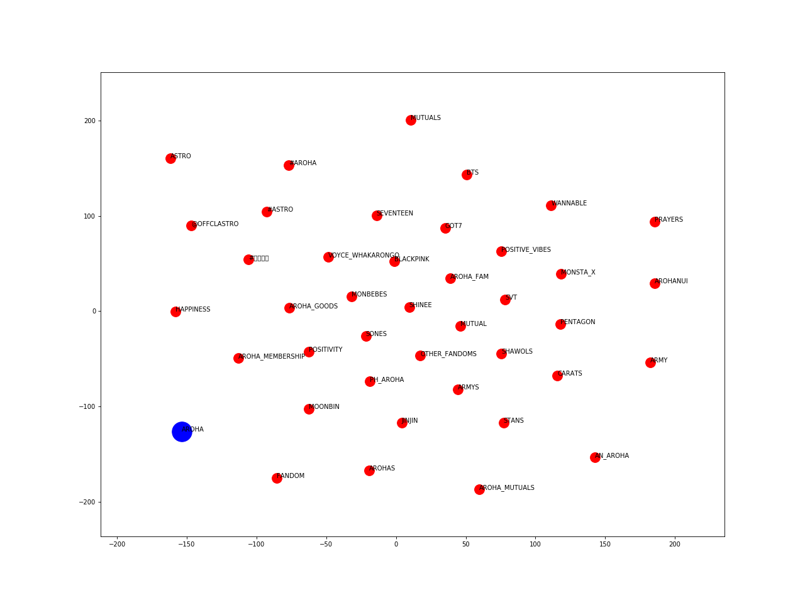
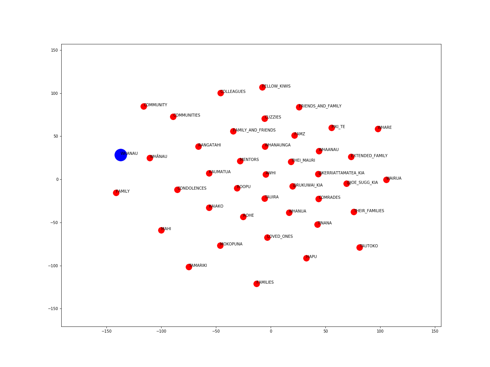
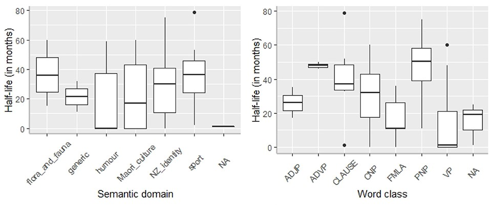

Loanword Twitter Corpus
The Māori Loanword Twitter (MLT) Corpus is a diachronic corpus of nearly 3 million New Zealand English tweets, posted between 2008 and 2018. The data was collected by extracting tweets containing one or more terms from a list of 77 Māori words and phrases. We then used computational machine learning methods to clean up the raw data, because many of the tweets were not relevant to a New Zealand English context (for instance, the loanword Moana, meaning sea, is commonly used to refer to the Disney film/princess).
The corpus consists of three key components:
- Raw Corpus: The original dataset, which includes many irrelevant (non-New Zealand English) tweets.
- Labelled Corpus: 3,685 tweets that were manually labelled as "relevant" or "irrelevant" and used as training data for our model.
- Processed Corpus: The final version of the corpus, containing only tweets that the model classified as relevant.
Building the MLT Corpus
Below is a visual representation of the steps involved in building the corpus.

For further information, see our paper.
Summary Statistics
This table shows key stats for the different components of the MLT Corpus:
| Description | Raw Corpus V2* | Labelled Corpus | Processed Corpus V2* |
|---|---|---|---|
| Tokens (words) | 70,964,941 | 49,477 | 46,827,631 |
| Tweets | 4,559,105 | 2,495 | 2,880,211 |
| Tweeters (authors) | 1,839,707 | 1,866 | 1,226,109 |
*Please note that these statistics differ from what is stated in the paper, because we later refined our classifier, opting for a Naive Bayes Multinomial model that considered both unigrams and bigrams.
Word Vectors
The following visualisations were created by training Word2Vec embeddings on the Māori Loanword Twitter (MLT) Corpus. Hyper-parameters were optimised by minimising the median ranking of a list of given word pairs. The vectors are projected into two-dimensional space using the t-SNE method.
Aroha (love): 
Whānau (family): 
Click to download all word vector plots (including other loanwords).
Download the MLT Corpus
Click to download the MLT Corpus.
Citing the MLT Corpus
If you use the MLT corpus, please cite the following paper:
- Trye, D., Calude, A., Bravo-Marquez, F., Keegan, T. T. (2019). Māori loanwords: A corpus of New Zealand English tweets. In Proceedings of the 57th Annual Meeting of the Association for Computational Linguistics: Student Research Workshop, pp. 136–142. Florence, Italy: Association for Computational Linguistics. doi:10.18653/v1/P19-2018.
Hybrid Hashtags
The Hybrid Hashtag (HH) Sub-Corpus is a subset of tweets in the MLT Corpus containing hashtags made up of Māori and English words (so-called "hybrid hashtags"). There are 81 hybrid hashtags in this dataset, used in 5,684 tweets and posted to Twitter by 3,771 distinct users. Popular hashtags include #waitangiday, #maorilanguageweek, #gokiwi, #proudkiwi, #kiwipride and #letssharegoodtereostories.

Download the HH Sub-Corpus
Click to download the HH Sub-Corpus.
Citing the HH Sub-Corpus
If you use the Hybrid Hashtag Sub-Corpus, please cite the following paper:
- Trye, D., Calude, A. S., Bravo-Marquez, F., & Keegan, T. T. (2020). Hybrid Hashtags: #YouKnowYoureAKiwiWhen Your Tweet Contains Māori and English. Front. Artif. Intell. 3:15. doi:10.3389/frai.2020.00015.
Media Attention
- Article in The Conversation, Hashtags may not be words, grammatically speaking, but they help spread a message, 3 November 2020
- Interview for Stuff NZ, Māori loanwords enrich Twitter, 8 July 2019
- Interview for Radio NZ, NZ’s unique te reo tweets, 12 February 2019
- Coverage from the University of Waikato, When machine learning, Twitter and te reo Māori merge, 11 February 2019
Team
External Collaborators:
- Felipe Bravo Marquez, University of Chile, Chile
- Nicole Chan, Industry, NZ
Funding
We graciously acknowledge the generous support of:
- Marsden Fund, Royal Society of New Zealand